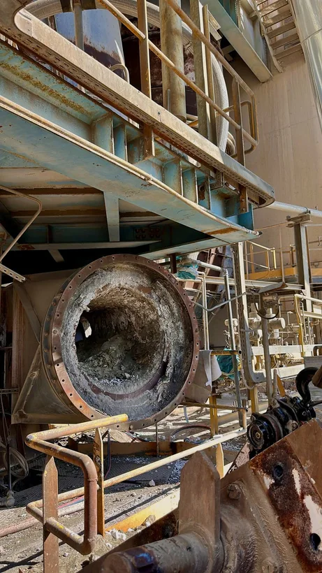

Montaggi industriali e carpenteria
Realizzazione, assemblaggio e manutenzione di impianti e strutture metalliche in contesti industriali.
Attività specialistiche per impianti, strutture e cantieri industriali.
Interveniamo in ambiti metalmeccanici, impiantistici ed edili, con soluzioni calibrate sulle esigenze del lavoro.
Realizzazione, assemblaggio e manutenzione di impianti e strutture metalliche in contesti industriali.
Interventi ordinari e straordinari, ripristini e sostituzione di componenti per la continuità operativa.
Montaggio, smontaggio, revisione e supporto tecnico nelle fasi di fermata e ripartenza impianto.
Attività su impianti di ventilazione industriale e sistemi HVAC.
Supporto nella posa, nell’installazione e nella manutenzione degli impianti.
Rivestimenti e isolamento termico di impianti, tubazioni, apparecchiature e linee produttive.
Lavorazioni di supporto a cantieri industriali e civili, opere complementari e sistemazioni tecniche.

Per gli scambiatori di calore forniamo attività di montaggio, smontaggio, revisione e sostituzione componenti, anche durante fermata e ripartenza impianto.
Descrivici il tuo interventoRaccontaci le esigenze della tua attività.